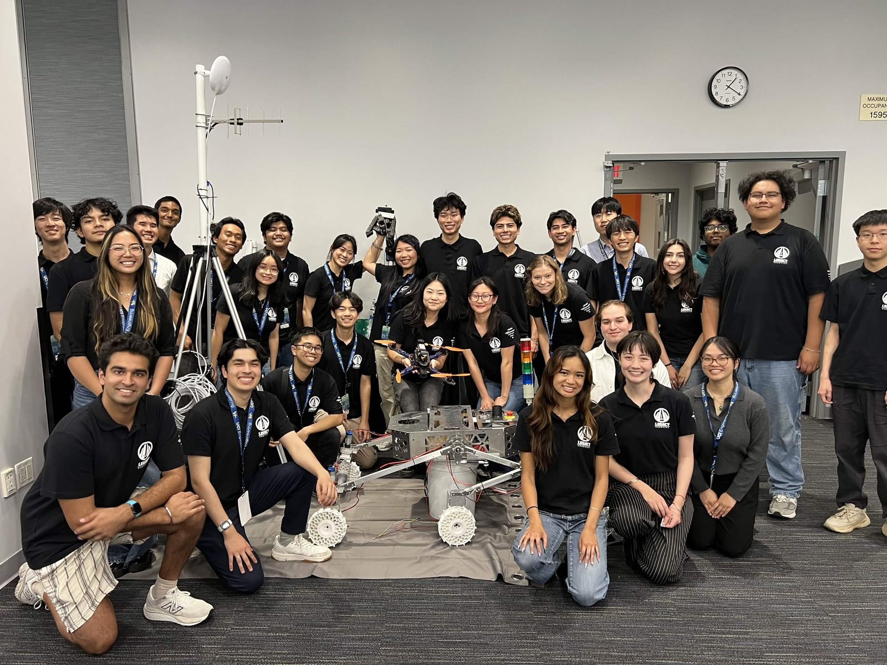
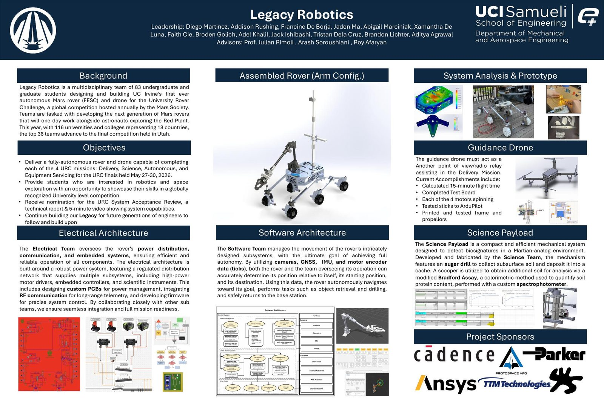

Team Size
80+ engineers
Legacy Robotics is UC Irvine's first-ever student-built autonomous Mars rover team, competing in the University Rover Challenge, the Mars Society's international competition held at the Mars Desert Research Station in Hanksville, Utah. The team fields FESC (Field Exploration Surface Cruiser), a Mars-analog rover built by 80+ engineers across 5 divisions (Business, Electrical, Mechanical, Science, and Software) to complete four field missions. This cycle 116 universities across 18 countries competed. As Assistant Project Manager I help oversee the full engineering organization and hold the rover to the mechanical and electrical constraints of the competition.

As Assistant Project Manager my focus is the organization itself: keeping a first-ever, 80+ person, 5-division team (Business, Electrical, Mechanical, Science, and Software) moving together toward one integrated rover and guidance drone. The work is systems-level: coordination, constraints, and delivery rather than any single subsystem.
Before moving into the PM role I worked on the Science team, developing the biosignature assay chemistry (Bradford protein assay + soil extraction buffer) and the onboard chemical-safety protocol.

